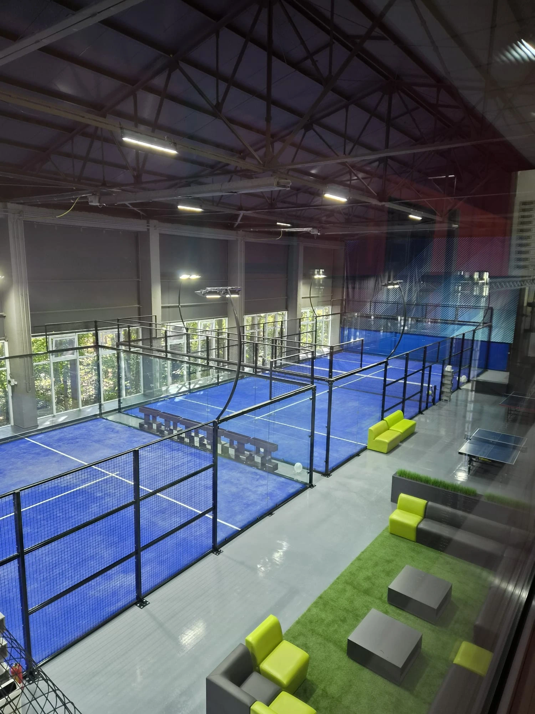

The Site Can Make or Break the Business Before the Courts Arrive
Current club-owner discussions repeatedly show that the hardest problem is often not selecting the court model—it is securing a viable property. Warehouse projects can fail on rent, clear height or change-of-use. Outdoor projects can fail on planning, drainage or weather. Rooftops can fail on structural capacity, access or wind exposure.
That makes site selection an investment decision, not a real-estate shortcut.
Cheap land with expensive civil works can be worse than a more expensive building. A premium warehouse with low clear height can be worse than a basic covered outdoor site. A rooftop with great visibility can still fail if the building interface is unsuitable.
Warehouse vs Outdoor Land vs Rooftop
| Factor | Warehouse | Outdoor land | Rooftop |
|---|---|---|---|
| Weather reliability | High | Low to medium unless covered | Low to medium unless covered |
| Rent / land exposure | Often high recurring rent | Land or lease cost varies widely | Can be premium urban real estate |
| Clear height | Critical constraint | Open sky unless roof added | Open sky unless roof added |
| Foundations | Existing slab must be verified | New civil works common | Existing structural deck must be verified |
| Drainage | Building/site drainage | Major outdoor design item | Critical to protect the building below |
| Wind | Mostly controlled by building | Site dependent | Often more exposed |
| Access | Doors, loading and internal handling | Usually easier if site is open | Vertical logistics can be difficult |
| Parking | Can be limited on industrial sites | Can be planned if land allows | Depends on host building |
| Expansion | Limited by building shell | Potentially easier | Limited by roof footprint / structure |
1. Warehouse: Best When the Building Really Fits
Warehouse padel is attractive because players get consistent conditions and the operator avoids rain cancellations. But the building has to work as a sports venue, not just as industrial space.
A 2025 Birmingham operator described the challenge of securing industrial space, negotiating deposits and rent-free periods, and dealing with change-of-use concerns. A 2026 UK discussion also questioned whether high-rent warehouse conversions remain viable once staffing, HVAC and business rates are included. citeturn792688reddit47turn792688reddit49
Warehouse checks before signing
- Lowest clear height—not just ridge height.
- Roof trusses, ducts, sprinklers and lights above the playing envelope.
- Column grid and whether courts can fit without compromised circulation.
- Floor condition, level and structural suitability.
- Loading doors and access for glass and structural components.
- Fire exits, occupancy, toilets and accessibility.
- Ventilation, condensation, heating / cooling strategy.
- Parking and evening access.
- Change of use and landlord approval.
- Rent, service charge, rates and fit-out period.
2. Indoor Clear Height: Do Not Read the Brochure Number Only
Players and developers frequently ask whether approximately 7 m is enough. A 2026 Reddit discussion shows the practical issue clearly: players may still use a 6.7–7 m venue if local alternatives are limited, but some would prefer a higher competing venue. citeturn792688reddit44
LTA/SAPCA covered-facility guidance uses a minimum clear height of 8 m over the centre line for common covered structures, with lower heights around the perimeter depending on geometry. Supporting columns should also avoid interfering with play, out-of-court areas, foundations and accessibility. citeturn792688search55turn792688search56
Use the Indoor Padel Clear Height Guide before committing to a warehouse.
3. Outdoor Land: More Freedom, More Civil Work
Outdoor land can give a club more control over court orientation, parking, social space and future expansion. But an empty site is not a finished sports venue. Ground levels, soil, drainage, power, lighting, access and planning all have to be solved.
A recent UK planning discussion around a first outdoor court focused heavily on foundation type, drainage and whether a canopy should be included from the beginning—exactly the items that can materially change an outdoor budget. citeturn792688reddit46
Outdoor land checks
- Topographic levels and flood risk.
- Soil / geotechnical condition where required.
- Foundation strategy and anchor interface.
- Surface and perimeter drainage.
- Power supply and lighting.
- Wind, corrosion and UV exposure.
- Noise and nearby receptors.
- Parking, access roads and emergency access.
- Future roof / canopy location.
- Expansion zone and utilities capacity.
Use the Foundation Guide and Drainage Guide before budgeting the site.
4. Outdoor Without a Roof: Cheap to Build, Expensive to Lose Bookings?
Outdoor projects in wet climates need a playable-hours model. Community discussion in the UK repeatedly warns that uncovered courts can lose bookings to rain and wet surfaces. That does not make every outdoor project unviable; it means the economics must reflect the actual climate and customer expectations. citeturn792688reddit46turn792688reddit49
Use Outdoor Padel Court Without a Roof: Is It Worth It? to compare weather downtime against the cost of coverage.
5. Rooftop: Premium Location, Engineering-Led Site
Rooftops can unlock high-value urban locations where ground-level land is unavailable. They can also create strong visual identity and convenience for mixed-use developments. But they should be treated as building-interface projects.
SPORTENVO's Kuala Lumpur rooftop project required coordination around the existing building interface, technical drawings, vertical access for components, rooftop drainage, wind exposure and installation sequencing.
View the Kuala Lumpur Rooftop Project →
Rooftop checks
- Structural load capacity and local engineer review.
- Point loads, base plates and anchor interface.
- Wind exposure at building height.
- Waterproofing and drainage protection.
- Crane, hoist, lift or stair access for steel and glass.
- Safe construction and maintenance access.
- Noise / vibration transmission to occupied floors.
- Lighting spill to nearby properties.
- Emergency routes and building fire strategy.
- Future replacement logistics.
6. Wind Is Usually More Important on Rooftops
Building height and surrounding terrain can materially affect wind exposure. A rooftop court should not inherit a generic ground-level product claim without project-specific review. For exposed sites, use the High-Wind & Coastal Padel Court Planning Guide.
7. Parking and Access Can Beat a “Perfect” Building
Players in community discussions repeatedly mention parking and ease of access as practical club essentials. A venue with excellent courts but frustrating parking or difficult evening access can weaken repeat visits. citeturn792688reddit51
Map arrival at your busiest hour, not at 11 AM on a site visit.
8. Social Space Changes the Site Requirement
A 2026 club-planning discussion explicitly argued against squeezing the maximum possible number of courts into a building and instead recommended a stronger social / bar area. That is a useful operating insight: the “best” site is not always the one with the highest court density. citeturn792688reddit48
Reserve reception, toilets, changing, seating, storage, circulation and spectator areas before finalizing court count.
9. Site Selection Scorecard
| Category | Weight to consider | Questions |
|---|---|---|
| Demand / catchment | Very high | Can enough players reach the site at the required price? |
| Total occupancy cost | Very high | Rent/land + rates + fit-out + finance + maintenance? |
| Physical suitability | Very high | Height, columns, levels, structure, utilities, drainage? |
| Planning risk | Very high | Use, noise, lighting, parking, drainage, fire? |
| Playable hours | High | What does weather or building condition remove? |
| Access / parking | High | Can players, deliveries and emergency services reach it? |
| Expansion | Medium–high | Can 2 become 4, or 4 become 6? |
| Brand / experience | Medium | Does the location support the intended customer proposition? |
10. Site Red Flags
- Only the ridge height is shown; lowest obstruction is unknown.
- Lease is attractive only because fit-out and change-of-use costs are ignored.
- Outdoor site has no confirmed drainage outfall.
- Rooftop owner cannot provide structural information.
- Parking is assumed to be “probably fine.”
- Future roof is mentioned but column/foundation zones are not reserved.
- Delivery route for glass and long steel members is unknown.
- Planning approval is assumed because another sports use exists nearby.
- Noise and lighting are deferred until after layout approval.
- The site only works at optimistic utilization.
11. Which Site Type Fits Which Project?
| Project goal | Site type to evaluate first |
|---|---|
| Reliable year-round urban club | Warehouse / indoor building |
| Lower-density suburban club with expansion | Outdoor land or covered outdoor site |
| Premium mixed-use urban development | Rooftop if structure and access are suitable |
| Seasonal resort | Outdoor or covered outdoor depending climate |
| Lease-risk / temporary activation | Mobile / modular solution on a suitable site |
These are planning directions, not universal recommendations. Local demand, approvals and engineering can reverse the answer.
12. Connect Site Selection to the Business Plan
A site should not be approved because it “fits four courts.” It should be approved because the business can survive the rent or land cost, the physical site works, the approval route is understood and the venue can deliver enough playable hours.
Use the Padel Club Business Plan, Profitability Model and Court Count Guide together. Once a site passes those checks, use the Padel Club Design Checklist to test circulation, clear height, lighting, social space and operations before the layout is frozen.
Community & Technical References
- Birmingham warehouse site and lease discussion
- Indoor vs outdoor warehouse economics discussion
- Indoor clear-height discussion
- Outdoor foundation, drainage and canopy discussion
- SAPCA Code of Practice for the Construction of Padel Courts
Comparing a warehouse, outdoor site or rooftop?
Send the site drawings, country, target court count, clear height, ground or slab condition, roof plan and access information. SPORTENVO can help define the court, foundation and weather-protection interfaces before procurement.
Review My Site →Padel Club Site Selection FAQ
Is a warehouse good for a padel club?
It can be excellent for reliable year-round play, but verify clear height, columns, rent, parking, ventilation, fire requirements, fit-out and change of use first.
Is outdoor land cheaper?
Not automatically. Add groundworks, foundation, drainage, utilities, lighting, planning and weather protection before comparing total cost.
Can padel courts be built on a rooftop?
Yes where structural capacity, wind, drainage, access and local approvals support the project.
What height should an indoor site have?
Use project-specific standards and local requirements. LTA/SAPCA guidance uses 8 m over the centre line as an important covered-facility planning reference.
What is the best padel club location?
The best site is the one where demand, access, physical suitability, approvals, annual playable hours and total occupancy cost work together sustainably.